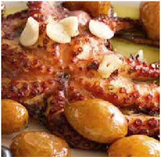

Kapitel 5 · Wein und Speisen kombinieren
Polvo à Lagareiro

Dieses typisch portugiesische Gericht wird aus Oktopus zubereitet, der erst gekocht und dann gegrillt wird. Serviert wird er mit heißem Olivenöl beträufelt. Das Wort Lagareiro bezeichnet jemanden, der im Lagar arbeitet, der Mühle, in der Oliven zu Öl gepresst werden. Der Name passt, denn das reichlich verwendete heiße Olivenöl, in dem Knoblauch und Zwiebeln gebräunt werden, wird über den Oktopus gegossen. Dazu gibt es gekochte, mit der Gabel angedrückte neue Kartoffeln.
Wein: Die intensiven Aromen des Gerichts verlangen einen guten Wein mit Struktur und Balance. Rotweine aus Douro, Dão oder Alentejo passen gut. Selbst ein gereifter Reserva ist ein guter Begleiter zu diesem wunderbaren Gericht.
Erklärung: Die Tannine eines Rotweins oder eines im Fass ausgebauten Reserva-Weißweins passen sehr gut zur Textur des Oktopus und zum Olivenöl.